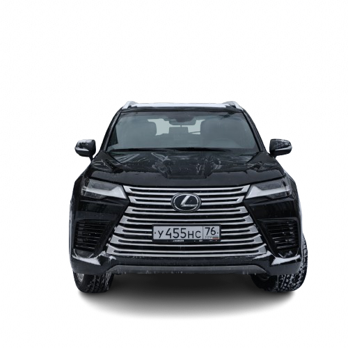

Я, конечно, не твой научник, но тремя восклицательными знаками тоже порадую
Метод научного тыка допускается, как и метод движения страницы вверх - вниз
Тег audio не поддерживается вашим браузером.
Скачайте музыку
.
